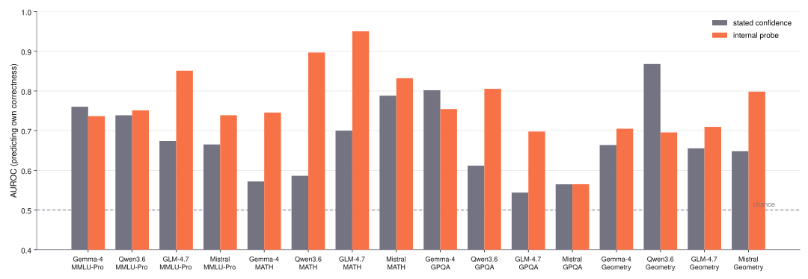
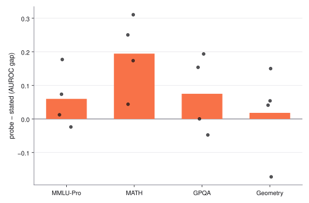
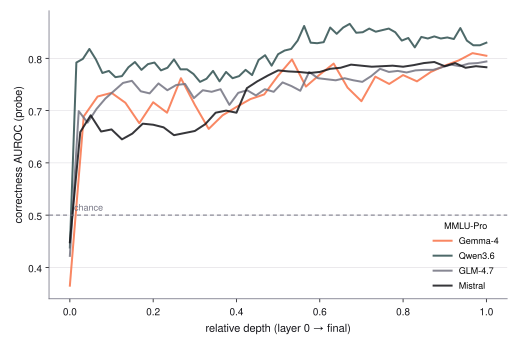
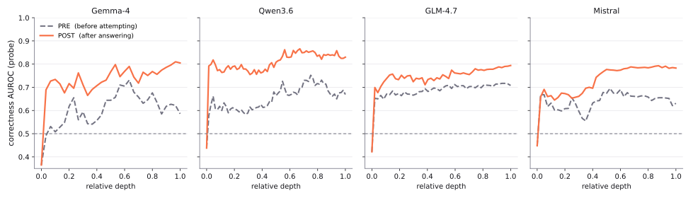
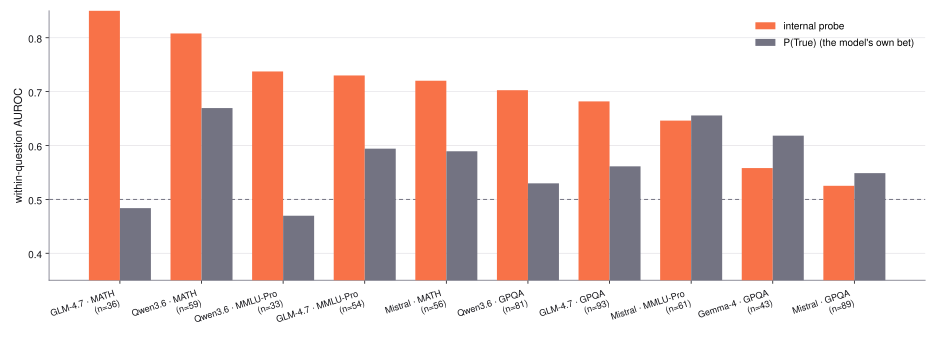
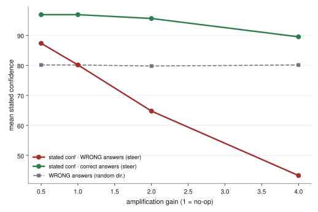

→ reveal / advance · ← back · N notes · P presenter
Mechanistic interpretability · progress report · July 2026
Do models know when they're wrong?
Progress report: what we ran, why, and what it found.
5 open models · 4 domains · 750 graded attempts per cell · 16-cell matrix complete
capture matrix done
label-free lens, 5 models done
steering replicating
paper framing open
Motivation · the program in one slide
Models fail confidently — a trustworthy "I'm not sure" is a free safety margin
the phenomenon
Models regularly produce a wrong answer and state "Confidence: 95." Nothing in the words separates a right answer from a wrong one — so the wrong one ships.
the question, split
"Doesn't know it's wrong" and "won't say it's wrong" are different claims. Does the knowledge exist inside (read it)? Can we use it (steer it)? The distance between knowing and saying is the study.
Inspiration: psychology's metacognition split — prospective ("will I get this right?") vs retrospective ("did I?"). Our protocol measures both, and reads the stream while it happens.
Status · six experiment tracks
Experiment progress
track
why we ran it
asks
status
findings
Setup: protocol + graders + activation capture
if the grades are wrong, every result is wrong
trustworthy "wrong", clean read site
done
12,000 graded records
E1 · internal vs stated
first, make sure the signal exists at all
does the doubt exist?
done
probe wins 12/16 cells
E2 · difficulty control (within-question)
make sure it isn't just spotting hard questions
attempt or hard topic?
done
probe 0.89 vs own bet 0.48
E3 · label-free lens
we need a reader that never saw the answers
readable without labels?
done
0.76–0.88 on dense
E4 · architecture control
the reader broke on two models — find out why
why does the lens break?
partial
0.43 → 0.88 within family
E5 · steering
seeing the signal isn't proof the model uses it
does the model use it?
replicating
conf. 80→43 on failures
Every number: out-of-fold, fixed layer, layer-0 surface check; dose / random / sign-flip controls on the causal one.
Progress · the setup done
Experiment setup
① pre-task confidence
one locked line
→
② attempt
reasoning only here
→
③ post-task confidence
one locked line
An external grader scores every attempt — and never tells the model.
Five open models — run locally, so we can read and steer the stream:
Mistral-24Bdense · Qwen3.6-27BMamba hybrid · GLM-4.7MoE · Gemma-4MoE run the full matrix; Qwen2.5-14Bdense is the architecture control.
Four benchmarks — chosen by failure rate:
GeoGen geometry — the model writes a construction program; a compiler checks every property. 13–39% pass.
MMLU-Pro — 10-option multiple choice; graded by validated letter match.
MATH — competition math; graded by symbolic equivalence (½ = 0.5 = \frac12).
Dropped as too easy: GSM8K, MedQA (90–95% pass) · scale: 4 matrix models × 4 benchmarks × 150 questions × 5 attempts = 12,000 graded records.
One attempt, end to end (MMLU-Pro):
Q: [question + options A–J]
① "How likely are you to answer correctly?
One line only. Do NOT answer yet."
→ Confidence: 80
② "Now give your final answer."
→ Answer: C
③ "How confident are you that your answer
is correct? One line only."
→ Confidence: 85
grader: gold = B → recorded ✗ (the model is never told)
One conversation — each turn re-reads the full transcript so far. No other memory exists.
Where we read: the token that emits "Confidence: N" — identical context every time. Slide 8: reads at chance at layer 0, rising to ~0.8 — so it's computed, not surface.
E1 · internal vs stated done
Knowing-Saying Gap?
why we ran itQuestion zero: is there any internal correctness signal at all? If the probe can't beat the model's own stated number, there is no knowing–saying gap to study.
What ran: per cell, the probe reads the stored decision-token states — out-of-fold, fixed 0.7·L layer — and its AUROC is compared against the AUROC of the model's stated confidence on the same 750 records. Graph next slide.
Next: nothing open — this track is closed and audited.
Graph · E1 evidence done
Probe vs stated confidence, all 16 cells

One pair of bars per model × benchmark cell · dashed line = chance (0.5) · error bars = bootstrap.
how each bar is computed
AUROC = Pr(score✓ > score✗) + ½·Pr(tie)
Grey: score = the confidence number the model stated in turn 3 — the post-task one, after it answered.
Coral: score = the probe's read-out of the turn-3 decision-token state — out-of-fold, fixed 0.7·L layer.
Both bars rank the same 750 records per cell; ✓/✗ labels from the external grader.
Read it: 0.5 = ranks right and wrong no better than a coin flip; 1.0 = perfect. Rank-based, so "everything is 95" is scored fairly — ties get half credit.
Probe 0.57–0.95 vs stated 0.54–0.87 · probe wins 12/16 (one tie) · MATH +0.20, geometry +0.02.
Graph · E1, the gap by domain done
MATH: it registers the flaw — and reports 95 anyway
Why this cut: the gap should be widest where wrong work looks right on the page — a wrong \boxed{42} has no surface tell.

Knowing − saying gap by benchmark · bar = mean over the 4 models · dots = individual models.
how this graph is computed
Per cell: gap = AUROC(probe) − AUROC(stated) — the two bars of the previous slide, subtracted.
Group the 16 cells by benchmark: bar = mean gap across the 4 models; each dot = one model's cell.
Positive = the stream ranks this model's successes better than its own stated number does.
Read it: MATH towers (+0.20 mean); geometry is smallest (+0.02) — at 13–39% pass, failure is near-default, which compresses every reader's contrast.
Internal read on MATH up to 0.95 while the stated number sits near 0.6.
And a trace leaks into words: after failed attempts — grader silent — models revise stated confidence downward (geometry, MMLU-Pro). Blind self-correction: the verbal channel is weak, not deaf.
Graph · the read-site check done
The self-check is computed, not read off the page

One line per model (MMLU-Pro cells) · dashed line = chance (0.5).
how this graph is computed
For every record, save the residual-stream vector at the confidence decision token — at every layer.
Per layer ℓ: train the linear probe (standardize → PCA → logistic regression) on the grader's ✓/✗ labels — folds grouped by question, scored strictly out-of-fold.
Plot held-out AUROC against relative depth ℓ/L; one line per model.
Read it: 0.5 at layer 0 means the raw embedding carries nothing about the problem — the wording there is identical for every record. The climb is the model computing its self-assessment. All reported numbers use the fixed 0.7·L depth, not the peak.
At the input, the probe reads exact chance — the wording gives nothing away. By mid-depth it reads ~0.8. That climb is the model doing the checking.
Graph · prospective vs retrospective done
Before vs after the attempt: two different signals

One panel per model (MMLU-Pro) · dashed = PRE (last prompt token) · solid = POST (confidence decision token) · horizontal rule = chance (0.5).
how these curves are computed
PRE: the same per-layer probe pipeline, read at the last prompt token — the model has seen the question but written nothing (no elicitation).
POST: the turn-3 confidence decision token — after the model has produced and seen its own attempt (the previous slide's curve).
Everything else identical: same records, same grader labels, question-grouped out-of-fold scoring, per layer.
Read it: PRE above chance = the prompt alone predicts success — that's difficulty. The PRE→POST lift is what seeing its own attempt adds — that's self-assessment.
POST rises above PRE — decisively by mid-depth — in all four models, and the two are largely distinct directions (POST→PRE transfer only 0.39–0.67).
E2 · within-question control done
It tracks this attempt — not "this topic is hard"
why we ran itThe best objection: "the probe just learned which questions are hard — that's not self-monitoring." The 5 repeats per question exist to kill exactly this.
Keep only questions with both passes and fails across the 5 attempts; AUROC within each question — difficulty constant by construction; race the probe against P(True), the model's own explicit bet. Graph next slide.
Corroborated by the pre/post split: retrospective beats prospective (POST 0.66–0.70 vs PRE 0.52–0.62) — largely distinct directions (transfer 0.39–0.67).
Next: nothing open — the pre-vs-post layer curve landed done (slide 9, just before this)
Graph · E2 evidence done
Difficulty frozen: probe vs the model's own bet

Mixed-outcome questions only · n per cell in the axis labels · dashed line = chance.
how each bar is computed
Keep only mixed-outcome questions: among the 5 attempts, at least one ✓ and one ✗.
Compute AUROC inside each question — its own 5 attempts only, so difficulty is constant by construction — then average across questions.
Coral = probe read-outs · grey = P(True), the probability the model puts on "True" when asked "is your answer correct?". Bootstrap resamples questions, not records.
Read it: anything above 0.5 here is per-attempt information — topic difficulty cannot explain it, because difficulty is identical inside a question.
Probe holds (up to 0.89, GLM·MATH); the model's own bet collapses to chance (0.48). The stream tracks the attempt.
E3 · the label-free lens done
Second witness: no answer key, same signal
why we ran itThe probe was trained on the grader's verdicts, so a skeptic can always say it just learned our dataset. The rebuttal is a second, independent reader that never sees a single answer.
Adapted from Anthropic's 2026 workspace tool. Our questions, grades, and records never touch any stage.
It finds the same signal: 0.76–0.88 on the dense models — close to the probe, beating stated confidence, with zero labels.
And it reads through the model's word-producing pathway — so the signal is speakable. The model could say this. It doesn't.
E4 · architecture control partial — MATH only
Label-free reading fails on MoE + Mamba; the signal doesn't
why we ran itThe lens failed on two of five models. Bug, or finding? The roster was built for this moment: architectures spanned deliberately, plus a same-family dense model held aside as the control.
model
architecture
lens
Qwen2.5-14B
dense
✓ 0.88
Mistral-24B
dense
✓ 0.82
Qwen3.6-27B
Mamba hybrid
✗ 0.43
GLM-4.7
MoE
✗ 0.31
Gemma-4
MoE+softcap
✗ won't build
The clincher: same Qwen family, one change — Mamba out, dense in: 0.43 → 0.88. The trained probe still reads all four matrix models (0.57–0.95): only the label-free shortcut breaks.
Why (leading explanation): one averaged map; MoE/Mamba re-route per input — through the smear "correct" and "wrong" collapse onto one vector (cos 0.96 vs ~0.4 dense). Field rule: dense → label-free ok; MoE/Mamba → bring a probe.
Next: broaden the control beyond MATH queued · per-input wiring-variance run proposed
E5 · steering causal on Mistral · replicating
Gauge, not wheel: it moves what the model says — not what it gets right
why we ran itDecodable ≠ used. Everything so far is correlation; the causal bar is dose-response + flat random control + sign flip. Design choice that keeps it clean: amplify the model's own signal (gain 1 = exact no-op), inject during the assessment turn only — the answer is already on the page.
What ran: sweep the gain over the model's own signal during turn 3, on Mistral × MATH; track mean stated confidence separately for wrong answers, correct answers, and a matched random direction. Graph next slide.
The same direction cannot make it right: accuracy steering shows no lift (0.38 vs 0.41 baseline, GLM×GPQA — preliminary). Replication is architecture-shaped: GLM null (verbalization saturates ~100), Gemma MATH underpowered.
Turning up the doubt signal lowers false confidence

Mistral × MATH · x-axis = how far we turn the signal up (1× = no change) · dashed grey = a random signal of the same strength.
how we steer
Find the direction. One direction in the model's working memory tracks "am I right?" — we get it by comparing its state on answers it got right vs. wrong.
Turn it up, mid-answer. As the model writes its confidence, we dial its own reading along that direction up or down — a volume knob on a signal it already has, not a new instruction. At 1× nothing changes.
Sweep and watch. Slide the knob (the x-axis) and plot the confidence it then states: red = wrong answers, green = correct, dashed = a random direction.
Why it's causal: the effect grows the more we turn the knob up, a random direction does nothing, and turning it down makes the model more overconfident.
Exact knob: h → h + (g−1)·(û·h − μ)·û
Confidence runs 0–100. As we turn up the model's own doubt, its confidence on wrong answers falls from 80 to 43 — it stops insisting it's right. On correct answers it barely moves (97 to 89): only false confidence deflates.
Rigor · the deviations log
Four bugs, four planned controls that caught them
train/test leakage
sibling samples straddled the split → question-grouped folds, all re-scored
confounded read site
answer tokens decoded 0.74 at layer 0 → moved to the decision token
MATH grader
string match flunked correct answers → symbolic equivalence, every cell re-graded
prompt-wording leak
geometry wording on QA → re-ran; before/after identical
Every headline number above survived all four fixes. The controls existing — and drawing blood — is why the survivors are believable.
Results · the three findings
It knows · you can read it · you can use it — as a gauge
It knows.
Internal signal beats stated confidence 12/16 cells, up to 0.95 AUROC — and it tracks the attempt, not the topic (0.89 vs 0.48 with difficulty frozen).
12/16
Readable — without labels.
A reader built only from the model's wiring recovers it on dense transformers (0.76–0.88); architecture-gated, isolated by a within-family swap (0.43 → 0.88). The signal is speakable.
0.88
Gauge, not wheel.
Amplifying the signal makes wrong answers confess (80→43, ECE halved, controls clean); it cannot produce correct answers.
80→43
The sentence for the paper: the knowing–saying gap is largely an access problem, not a missing capability — the signal exists, is speakable, and isn't routed to the mouth.
Next · queue, experiments, decisions
What runs next — and what we need from you
GPU queue (booked): Gemma × GPQA steering rerun · per-input wiring-variance measurement (turns the smear from fingerprint into measurement). The pre/post layer-curve figure already landed — slide 9.
Close the gap: route the internal signal to behavior — abstain / retry / escalate. The payoff experiment; needs a target task + a week of runs.
Broaden the architecture control beyond MATH (MMLU + geometry) — seals Finding 2.
RLHF attribution: if it "knows but won't say," instruction-tuning is the suspect — base-vs-instruct is one box-day. Run now or post-skeleton?
Decision — paper framing: which thread leads: the knowing–saying gap, the dense-only lens, or gauge-not-wheel? Determines what we polish hardest.